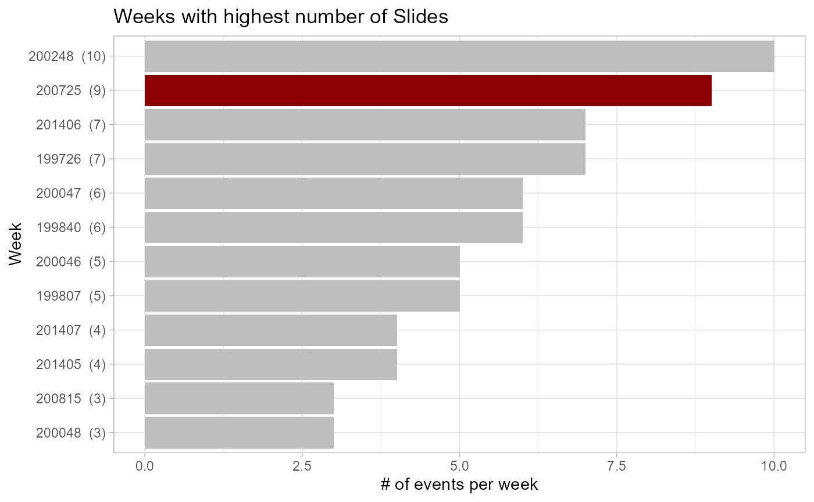

maxslidesperweek.RmdUse the iffi-data to find out in which week the most events happened
We use the data that already comes with the iffitoR-package
first we load the packages
library(iffitoR)
library(lubridate)
library(stringr)
library(leaflet.extras)
library(sf)
library(leaflet)
library(dplyr)
library(ggplot2)
library(glue)
library(forcats)
data_iffi = landsld
glimpse(data_iffi)
#> Rows: 8,919
#> Columns: 17
#> $ PIFF_ID <dbl> 20100, 30100, 30200, 30300, 30400, 30500, 30600, 401...
#> $ area <int> 272156, 0, 0, 83566, 0, 0, 0, NA, 57402, 0, 0, 0, 0,...
#> $ tipologia <chr> "complex", "area subject to rockfall/topple", "fall-...
#> $ nome_movimento <chr> "complex", "area subject to rockfall/topple", "fall-...
#> $ nome_causa <chr> "n.d.", "n.d.", "superfici di taglio preesistenti", ...
#> $ first_level <chr> "complex", "area subject to rockfall/topple", "fall-...
#> $ second_level <chr> "complex", "area subject to rockfall/topple", "fall-...
#> $ year_present <lgl> TRUE, TRUE, TRUE, TRUE, TRUE, TRUE, FALSE, FALSE, FA...
#> $ month_present <lgl> TRUE, TRUE, TRUE, FALSE, TRUE, TRUE, FALSE, FALSE, F...
#> $ day_present <lgl> TRUE, TRUE, FALSE, FALSE, FALSE, TRUE, FALSE, FALSE,...
#> $ date_info <chr> "day", "day", "month", "year", "month", "day", "no d...
#> $ date <date> 1967-01-01, 1993-09-25, NA, NA, NA, 2012-04-23, NA,...
#> $ year.int <int> 1967, 1993, 1999, 1999, 2009, 2012, NA, NA, NA, 2011...
#> $ month.int <int> 1, 9, 1, NA, 5, 4, NA, NA, NA, 1, NA, 8, 2, NA, 2, 2...
#> $ day.int <int> 1, 25, NA, NA, NA, 23, NA, NA, NA, 10, NA, 7, 11, NA...
#> $ year.posix <date> 1967-01-01, 1993-01-01, 1999-01-01, 1999-01-01, 200...
#> $ geometry <POINT [m]> POINT (726753.9 5210405), POINT (669896.9 5122...
data_iffi %>%
filter(str_detect(second_level, "translational")) %>%
count(date, sort=T)
#> Simple feature collection with 174 features and 2 fields
#> geometry type: GEOMETRY
#> dimension: XY
#> bbox: xmin: 610817.1 ymin: 5122702 xmax: 757506.2 ymax: 5219081
#> projected CRS: ETRS89 / UTM zone 32N
#> First 10 features:
#> date n geometry
#> 1 <NA> 623 MULTIPOINT ((610817.1 51668...
#> 2 2007-06-21 9 MULTIPOINT ((677353.1 51966...
#> 3 2002-11-26 6 MULTIPOINT ((658514.2 51685...
#> 4 2000-11-18 5 MULTIPOINT ((619146.7 51660...
#> 5 1998-10-07 4 MULTIPOINT ((665008.8 51886...
#> 6 2014-02-05 4 MULTIPOINT ((663841.8 51605...
#> 7 1997-06-26 3 MULTIPOINT ((694473.2 51574...
#> 8 1998-02-17 3 MULTIPOINT ((711561.5 51990...
#> 9 2008-07-29 3 MULTIPOINT ((682951 5173291...
#> 10 2016-08-04 3 MULTIPOINT ((665589.8 51755...
dat = data_iffi %>%
filter(date == as.Date("2007-06-21")) %>%
st_transform(4326)
# the color palette for the categorical data
cf = colorFactor(palette = "RdYlBu", domain=dat$second_level)
sl = unique(dat$second_level)
map = leaflet(dat) %>%
addProviderTiles(providers$Stamen.TonerLite)
for (g in sl) {
d = dat %>% filter(second_level == g)
map = map %>% addCircles(
data = d,
popup = paste0("date: ", d$date, "<br>", "type:", d$second_level),
color = ~ cf(d$second_level),
group = g
)
}
map %>% addLayersControl(overlayGroups = sl)
data_iffi %>%
filter(date_info == "day") %>%
filter(str_detect(second_level, "translational")) %>%
mutate(week = paste0(year.int, formatC(week(date), flag=0, width=2))) %>%
count(week, sort=T) %>%
mutate(first_day_of_week = as.Date(paste0(week, 1), "%Y%U%u")) %>%
mutate(week = glue("{week} ({n})")) %>%
mutate(week = fct_reorder(week, n)) %>%
mutate(ishighlight = ifelse(n == 9, TRUE, FALSE)) %>%
head(n = 12) %>%
ggplot() +
geom_col(aes(x=n, y=week, fill=ishighlight)) +
scale_fill_manual(values = c("grey", "darkred"), guide=F) +
theme_light() +
labs(x = "# of events per week",
y = "Week",
title = "Weeks with highest number of Slides")